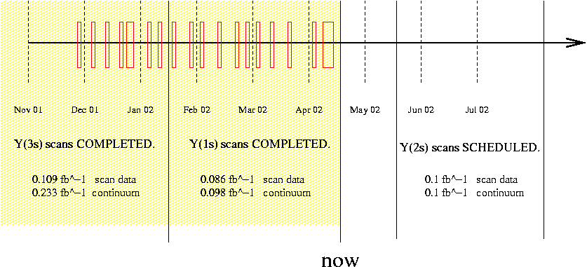

Dilepton Widths of Y(1s), Y(2s) and Y(3s)
Jim Pivarski
At this time, Y(1s) and Y(3s) datataking has been completed.

Line shape was scanned eight successive times to protect against calibration instabilities.